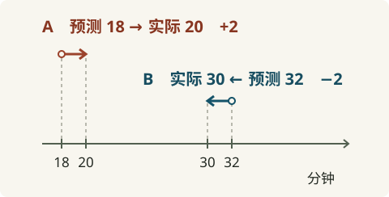
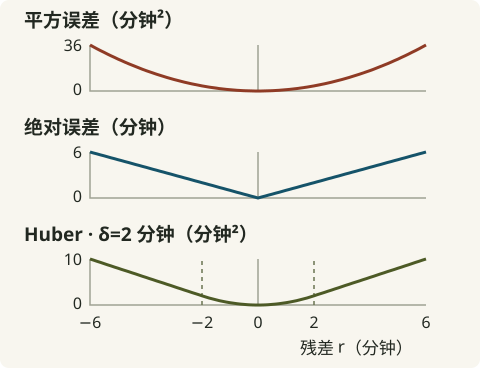
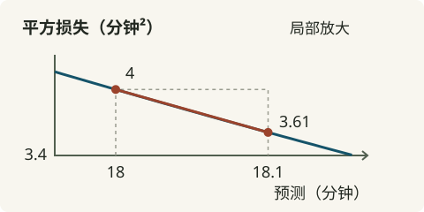

03b · 回归损失函数：模型如何衡量错误
⏱ 阅读约 36 分钟 · 动手实践另计
差了多少？猜早还是猜晚？怎样把这次错误变成可以优化的数字？
先看四份外卖订单
03 的直线已经会猜几分钟送达。03a把问题换成会不会超时。本章回到分钟数，先问怎么评价一次预测，再用评价结果改一次模型。
这些演示订单都已送达。实际分钟数记作 y，模型在送达前猜的分钟数记作 ŷ（读作「y 帽」）。先比较 A 和 B。

查四份订单的完整数据
| 订单 | 实际 → 预测（分钟） | 实际减预测（分钟） |
|---|---|---|
| A | 20 → 18 | +2 |
| B | 30 → 32 | −2 |
| C | 25 → 20 | +5 |
| D | 40 → 38 | +2 |
残差保留方向
从预测走到实际的带方向差值叫残差（Residual）。本章约定 r = y − ŷ，单位是分钟。
$$r = y - \hat y$$
A 单实际减预测是 20 − 18 = +2，说明猜早了。B 单是 30 − 32 = −2，说明猜晚了。若一笔订单实际和预测都是 25 分钟，残差为 0。
先想一想：只拿 A、B 两单，把残差平均，会觉得模型有多准？
看反馈
平均残差是 (2−2)÷2=0，可两单各猜错了 2 分钟。正负号能告诉我们偏向哪边。要衡量错了多少，还需要一个不会互相抵消的评分。
从单笔平方误差到 MSE
我们希望猜中得 0 分，偏差越大罚得越重。把残差乘自己，正负都变成非负数，而且偏差翻倍，罚分变四倍。这是单笔平方误差（Squared Error），记作 L。
$$L = (y - \hat y)^2 = r^2$$
A 单的 L = (20 − 18)² = 4 分钟²。B 单的残差是 −2，平方后也得 4。分钟²是评分的单位，不能读成「平均差了 4 分钟」。
把一批订单的平方误差先求和再除以元素数，就得到均方误差（Mean Squared Error，MSE）。i 是订单编号，n 是元素数。这里每单只预测一个数，n 就是订单数。Σ 表示逐项相加。
$$\operatorname{MSE}=\frac{1}{n}\sum_{i=1}^{n}(y_i-\hat y_i)^2$$
C 单是 (25−20)²=25 分钟²，D 单是 (40−38)²=4 分钟²。四单总平方误差为 4+4+25+4=37 分钟²，平均后 MSE = 37 ÷ 4 = 9.25 分钟²。单笔的 4、批量的总和 37、批量的平均 9.25 各自回答不同问题。
用代码库时，怎样确认到底除以几
reduction 是把多个损失元素合并为一个数的方式。同一批元素的 reduction=sum 得 37，reduction=mean 得 9.25。固定元素数、仅比较这个损失时，两者的最优点相同，梯度相差固定倍数。若 4 个样本各有 3 个输出，按所有元素取平均会除以 12。使用库函数时确认实际的归约范围。
为什么还要 MAE
假如 C 单的 25 分钟被误录成 50，预测仍是 20，残差就从 +5 变成 +30。平方罚分从 25 跳到 900。一条记录可能盖过整批正常订单。
另一种做法是只量距离，取残差的绝对值。单笔距离记作 |r|，单位是分钟。把所有距离平均，得到平均绝对误差（Mean Absolute Error，MAE）。
$$\operatorname{MAE}=\frac{1}{n}\sum_{i=1}^{n}|y_i-\hat y_i|$$
原来的四单有 MAE = (2 + 2 + 5 + 2) ÷ 4 = 2.75 分钟。若 C 单误录，C 的这项从 5 增到 30，按距离线性增长。选损失时看误差的业务代价与标签质量。平方误差适合试验「偏差越大，每多错一分钟越贵」的目标。绝对误差适合试验「每多错一分钟多付近似相同代价」的目标。
Huber 在阈值处换一种罚法
如果想让小误差处变化平滑，又希望大误差每多一分钟只增加固定的罚分，可以用 Huber 损失（Huber Loss）。阈值 δ（读作 delta）决定在哪换规则。先看 δ=2 分钟 时三种单笔损失的形状。

Lδ(r) 是一个残差 r 的 Huber 罚分，δ 和 r 都用分钟，结果用分钟²。|r| 是残差的距离。阈值必须大于 0。
先让小误差用一半平方。到 |r|=δ，罚分是 δ²÷2，斜率大小是 δ。外侧从这个罚分起步，每多偏差 1 分钟加 δ。因此外侧罚分是 δ²÷2 + δ(|r|−δ)，整理就是图下第二行。两边在阈值处的罚分和斜率都接得上。
取 δ=2，A 单正好到边界，两边代入都得 2 分钟²。C 单用外侧公式，2×(5−1)=8 分钟²。若改用秒，2 分钟的阈值要换成 120 秒。实际选阈值时，先用合理的误差尺度给候选，再在验证集上比较效果。
残差回答「偏哪边」，损失回答「偏这么远要罚多少」。比较不同损失时看形状和业务代价。接下来固定平方误差，观察把预测往两边挪动时罚分怎样变。
从 18 到 18.1，量一次局部斜率
还是 A 单，实际 y 固定在 20 分钟。预测 ŷ 从 18 改到 18.1，残差从 2 变成 1.9，平方损失从 4 变成 3.61。

这段的平均斜率是 −3.9 分钟，表示在这段小区间里，预测每增加一单位，损失按这个比例下降。若只改到 18.01，损失是 1.99²=3.9601，平均斜率是 (3.9601−4)÷0.01=−3.99。
一般地，让预测变化 h 分钟，残差从 r 变成 r−h。h 非零时，两点之间的差商为 [(r−h)²−r²]÷h。展开分子得到 −2rh+h²，再除以 h 得 −2r+h。h 越接近 0，这个平均斜率越接近 −2r。极限就是当前预测处的导数（Derivative）：
$$\frac{\partial L}{\partial\hat y}=-2(y-\hat y)=-2r$$
符号 ∂L/∂ŷ 读作「实际值固定，损失对预测的局部变化率」。A 单 r=2，解析导数为 −4 分钟。−3.9 和 −3.99 来自有限的小步，−4 描述起点处的方向与变化率。可回看 02a 的小步试探 或 03a 的差商演示。
变化率沿两条路传给参数
要让模型下次也能算出新结果，能调整的是直线里的权重 w 和偏置 b。模型用 ŷ = wx+b 预测。x 是距离（公里），w 是每公里增加的分钟数，b 是基准分钟数。
用另一笔演示订单来算更新。取 x=2 公里、y=10 分钟，初始 w=3 分钟/公里、b=1 分钟。预测为 3×2+1=7 分钟，残差为 10−7=3 分钟，平方损失为 3²=9 分钟²。现在要决定 w 和 b 各改多少。
固定其他参数，只动一个参数得到它的偏导数（Partial Derivative）。把这些偏导数放在一起就是梯度（Gradient）。例如 w 多 0.01，预测先多 0.01×2=0.02 分钟，损失在当前点附近约少 6×0.02=0.12 分钟²。两段局部变化率相乘，就是链式法则。
$$\frac{\partial L}{\partial w}=\frac{\partial L}{\partial\hat y}\,x$$
$$\frac{\partial L}{\partial b}=\frac{\partial L}{\partial\hat y}\cdot 1$$
同一个 w 用于很多单。进入批量训练时，对每单先走完相应的参数路径，再按所用的损失规则合并各单贡献。MSE 下还要除以 n。
更新一次，再算一遍损失
学习率（Learning Rate） η 控制步长。对每个参数用旧值减去 η 乘它的梯度，本例按分钟和公里的数值取 η=0.01。两个梯度都用同一组旧参数计算。若更换单位，也要重新判断步长是否合适。
- 更新 w。w_new = 3 − 0.01×(−12) = 3.12 分钟/公里。
- 更新 b。b_new = 1 − 0.01×(−6) = 1.06 分钟。
- 重新预测。ŷ_new = 3.12×2 + 1.06 = 7.30 分钟。
- 重新计分。L_new = (10−7.30)² = 7.29 分钟²，这单从 9 降到 7.29。
负梯度表示当前参数稍增时损失会下降。减去负数让这两项参数增加，预测朝 10 移动。这是一次单样本更新的结果。换别的样本或步长，需要重新检查损失。
用 Python 复算这一步
先用旧参数算预测和损失，再把预测斜率分别乘 x 和 1。最后更新参数并复算。复制整段可直接运行，只用 Python 基本运算。
distance = 2.0
actual = 10.0
weight, bias = 3.0, 1.0
learning_rate = 0.01
prediction = weight * distance + bias
residual = actual - prediction
loss = residual ** 2
prediction_slope = -2 * residual
weight_slope = prediction_slope * distance
bias_slope = prediction_slope * 1
weight -= learning_rate * weight_slope
bias -= learning_rate * bias_slope
new_prediction = weight * distance + bias
new_loss = (actual - new_prediction) ** 2
print(f"{prediction:.2f} -> {new_prediction:.2f}")
print(f"{loss:.2f} -> {new_loss:.2f}")第一行输出 7.00 → 7.30，第二行输出 9.00 → 7.29。把学习率设成 0，两行左右数值就相同。
现在已能用平方损失完成一次更新。接下来看同一条梯度路径怎样随损失函数改变，以及遇到大误差时应检查什么。
异常值怎样影响梯度
同一批数据里，平方损失会随大残差增加预测梯度的大小。MAE 的梯度大小固定，Huber 在阈值外也会封顶。这会改变一笔异常订单在本批梯度中的影响。
展开损失的斜率与五单对照
三种损失的斜率不同。单笔平方误差的预测斜率是 −2r。绝对误差在 r>0 时为 −1，r<0 时为 +1。r=0 处有尖角，左右斜率不同。次梯度可在两侧斜率围出的区间选值，常见自动微分实现取 0。
Huber 小误差段是半平方，对 r 求导得到 r，再乘残差对预测的斜率 −1，得到 −r。外侧对 |r| 的斜率固定为 δ。下式 sign(r) 表示 r 的符号，r 为正取 +1，为负取 −1。整个式子是损失对预测的导数，单位为分钟。
在 δ=2 时，r=+2 的两段都接到 −2，r=−2 的两段都接到 +2。若 r=+5，平方误差的斜率为 −10，绝对误差为 −1，Huber 为 −2。大误差继续增加时，Huber 的这段斜率大小仍是 2。
用新的一批演示残差 [1,−1,2,−2,30] 分开观察批量平均。把五个单笔斜率的绝对值各除以 5。问残差 30 的绝对预测梯度占绝对值总和的多少。
- MSE · 83.33%。MSE：
2|r|/5。五项是 0.4、0.4、0.8、0.8、12，占比 12÷14.4。 - MAE · 20%。五项都是 0.2，占比 0.2÷1。
- Huber · 25%。δ=2，五项是 0.2、0.2、0.4、0.4、0.4，占比 0.4÷1.6。
这是各自损失下的预测梯度绝对值占比。对实际参数 w 的贡献还要乘各单 x，再保留符号求和，可能放大或抵消。若 30 分钟误差来自录入错误，先查标签。若业务确实要重罚大偏差，则用验证集比较。三种损失都对残差正负对称，若早到和晚到的代价不同，需要另外定义评价方式。
只能猜一个数时该猜什么
若每单只能用同一个分钟数预测，MSE 在样本均值处最小，MAE 在样本中位数处最小。一个特别大的送达时间会拉高均值，却未必改变中位数。
展开均值、中位数与最优值的理由
换五份实际送达时间 [14,15,16,17,60]，模型看不到特征，每单都只能猜同一个 c（分钟）。
- 猜中位数 16 分钟。MSE = (4+1+0+1+1936)÷5 = 388.4 分钟²。MAE = (2+1+0+1+44)÷5 = 9.6 分钟。
- 猜均值 24.4 分钟。MSE = (108.16+88.36+70.56+54.76+1267.36)÷5 = 317.84 分钟²。MAE = (10.4+9.4+8.4+7.4+35.6)÷5 = 14.24 分钟。
平方误差的平均对 c 求导，得到 2Σ(c−yᵢ)/n = 2(c−平均值)。均值左侧导数为负，右侧为正，所以在均值处最小。60 增大就会拉高均值。
绝对误差的总和在样本点之间是直线。c 略向右时，左边每单的距离增加同样多，右边每单减少同样多。刚到 16 左侧时左 2 右 3，再往右会减少距离。刚越过 16 时左 3 右 2，再往右会增加距离。所以最小值在 16。若样本数为偶数，排序后的中间两个值之间都可取最小值。只要最右点仍在右边，增加它的值不会改变这里的中位数。
总结与检查
现在你可以把一次预测走完：先写带方向的残差，用损失评分，找预测改变时的斜率，把斜率传给 w 与 b，更新后再算一次。
综合题。 距离 x=3 公里、实际 y=20 分钟，w=5、b=2。用单笔平方误差和学习率 0.01，求原预测、损失、两条参数梯度、更新后预测和损失。
展开完整答案
原预测 5×3+2=17，残差 20−17=3，损失 9。预测斜率是 −6，权重梯度 −6×3=−18，偏置梯度 −6×1=−6。新 w=5.18，新 b=2.06，预测为 5.18×3+2.06=17.60，损失为 (20−17.60)²=5.76。
解释题。 四单的 MSE 要除以几？异常值示例里的 83.33% 能直接当作对 w 的贡献吗？如果分钟改成秒，为什么也要换算 δ？
检查解释
四单各预测一个数，共 4 个元素，所以除以 4。83.33% 量的是绝对预测梯度占比。对 w 的梯度还需乘各单距离，并按符号合并。δ 与残差单位相同，2 分钟的阈值应换成 120 秒，切换规则才会发生在同一处。
下一节 03c · 回归输出层会用 ŷ=f(z) 限制预测范围。带着这里的两段变化率去看：如果中间又多一段，梯度怎样传回去？03d是进阶选读。